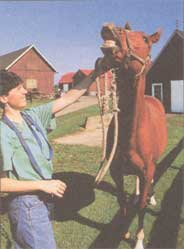
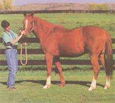

COUNTRY VET
High-performance horses often suffer from ulcers.
- Perle LeMay
Senneterre, Quebec
Dear Perle,
The horse has two areas of stomach lining, one with glands and one without. Most horses who get ulcers develop these in the nonglandular part of the stomach lining, where it is thought that increased stress and feeding regimes are responsible. Most often these horses are being fed large quantities of grain with reduced quantities of hay in two or three large feedings a day. The grain causes an increase in the production of gastric acid, and the acid contributes to the destruction of the epithelium lining of the stomach.
Many horses, especially those with chronic lameness and arthritis and those on pain-relief medications such as phenylbutazone and other anti-inflammatories, develop ulcers in the glandular area of the stomach. Prostaglandin E is required for mucus production and many anti-inflammatories inhibit the production of Prostaglandin E. Without mucus, the glandular area of the stomach is unprotected and often becomes ulcerated.
Regardless of where the ulcers occur, we are finding that they are more and more common in horses that are shown or raced or are heavy performance/travel animals, and in those animals fed heavy grain meals and anti-inflammatories. Stress is probably an enormous factor in the development of these ulcers. A diet best suited to prevention is one that has more forage than grain, is provided frequently, but not to the point of contributing to excess weight, and is supplemented by a low stress, moderated exercise schedule. Antiulcer medications are available for our equine friends, but the most effective ones are frequently the most expensive and may mask signs of ulcers rather than treat them.
Our goat has had a tilled head for two months. He seems to get around okay, but I've noticed his eyes having some uncoordinated motions as well. His appetite is good. Should we worry?
-Andy Blackman
Charlotte, NC
Dear Andy,
There are numerous causes for head tilts in animals. Some of these are very simple to deal with and some are more serious. Head tilting and the eye motions you describe are commonly referred to as neurological disease in veterinary terms. If the animal has had the tilt for a while and appears to be doing well otherwise (appetite, attitude), it is possible that an inner ear infection may be the cause. Otitis media (inflammation of the middle ear) can be a sequel to upper respiratory disease or systematic infection, especially in young goats, or to certain parasites, such as the ear mite (psoroptes). The rapid circular or back-and-forth eye movements that occur with ear infections come from the inflammation affecting the inner ear nerves that control balance. When treated with appropriate antibiotics early in the course of the disease, response can be complete. Oftentimes, topical and system (oral or injectable) antibiotics are necessary. Severe cases can rupture the ear drum and cause an accumulation of pus and organisms in the soft tissues of the middle ear or in the delicate bones that control hearing and balance.
Another cause of disease affecting the nervous system (causing head tilting) in small ruminants is parasite infection. Parelaphostronglyus tenuis is a parasite that matures in snails and mollusks but is easily ingested by deer, goats, and sheep while they graze. Once ingested, the larvae start migrating through the central nervous system where they cause a great deal of damage and various signs of incoordination, stumbling, loss of muscle tone, and nerve dysfunction. There are many dewormers that can kill the parasite prior to its entry into the central nervous system (ivermectin, fenbendazole, and levamisole). Once it enters the brain or spinal cord, destroying the parasite is much more difficult, and controlling the signs of inflammation is paramount to treatment. Tapeworm cysts in the brain or spinal cord, as well as penetration of the brain through the nose by the larva Oestrus ovis, although not as common, are also causes of central nervous system disease and the subsequent head tilting in goats and sheep.
Caprine arthritis encephalitis (CAE) virus can cause neurologic disease, along with pneumonia, mastitis, and arthritis. Young kids get the disease usually prior to five months of age, since it is spread primarily through milk and colostrum. Paralysis and incoordination are a com mon sign, but this disease rarely causes a head tilt alone. Likewise, abscesses can happen inside the animal just as easily as they occur on the skin. Bacterial organisms gain entry to the central nervous system through abrasions in the oral cavity mucosa and throat area. An abscess at the base of the brain or anywhere in the sensitive coverings (meninges) of the brain could result in a head tilt, although it is reasonable to think that other signs like fever, lethargy, and loss of appetite would appear in an animal with abscesses. Infection with CAE and abscesses are extremely difficult to treat, let alone cure. However, it is worthwhile having some blood work done to diagnose either of these if the animal worsens, as the virus (CAE) is highly contagious and may be something you can prevent other animals from getting.
One more cause of a head tilt worth mentioning in any farm animal is rabies. Considering the zoonotic potential (threat or risk of disease spreading to humans), it would seem reasonable to have a vet take a glimpse at your goat just to rule this out. Also, examine your feeds, dewormers, pesticides, or any chemicals used in and around the goat shed to make sure poisoning isn't the cause. Feeds frequently have variable amounts of vitamins and minerals, and imbalances may result in the symptoms you are describing.
Our six-year-old cat, Melba, hunts rabbits, mice, and moles all the time. She recently had a swelling on her neck which turned out to be a bizarre grub of some type. Can you explain this?
-Andrew Meyers
South Bend, IN
Dear Andrew,
Country cats and kittens, especially those that are good hunters, frequently come down with abscesses on their head, face, neck, and legs. Often these are simple bacterial accumulations, either from fight wounds they obtain in their entanglements, or from bacteria or yeast caught on sticks and branches they encounter on their way into the rabbit hole. Yet there are some lumps and bumps that contain a grub known as a Cuterebra, or botfly larva.
Female Cuterebra flies lay their eggs along rabbit runs and near rodent burrows. As the cat or kitten (on its way down a burrow) brushes past, the larvae hatch instantaneously and crawl immediately into the host's fur. Once thought to burrow directly into the host's skin, these larvae are now known to enter the body through natural openings - nose, eyes, and ears being the most prominent. The larvae begin maturing and often migrate to sites under the skin on the head and neck, although some have been found on the lower body region and even entering the brain or spinal cord. These latter aberrant migrations, as they are known, often result in blindness, incoordination, and stupor, and commonly have fatal results.
If you notice a lump or bump on your cat and suspect it contains a larva, there should be a hole through which the larva breathes at the skin's surface. Often these grubs are very hardy and the hole leads to a fibrous tract penetrating under the skin for great distances. Bacterial abscesses that are open to the air like this often heal on their own. Cuterebra abscesses will not. Try to extrude the organisms by injecting hydrogen peroxide in the opening. If the bot comes to the surface it may be grasped with forceps and extracted the rest of the way. Do not break the Cuterebra or force your way into the animal's skin to retrieve it. These manipulations often result in crushing of the larva and inflammation of the opening in the skin. Once the larva is removed, these wounds often heal slowly or only partially because of the secondary bacteria that invade with the bot, or because of the breakdown of the larva and release of its toxic substances into the tissues around the abscess. Cuterebra infections are common in warm, damp environments and late summer seasons.
With the advent of blackfly season, our collie, Lucy, has obtained a large swelling in her ear flap. Is this due to the fly bites, and is there anything we can do to prevent them from occurring?
-Mark Friedman
Meridian, MS
Dear Mark,
The swelling in the ear flap is probably a hematoma, or bruise, caused by trauma and breaking of the vessels in and around the pieces of cartilage in the ear. The blackflies
and several other pesky insects usually inflict bites on the ear tips, and rarely in the ear canals. As they annoy the dog, the animal tries to shake her head to get rid of the pests. The dog may shake her head so violently that she ruptures the vessels in the flap, causing the hematoma.
Conservative management consists of anything from cold compresses to injections of steroids into the bruise. These treatments, however, usually result in scarring and disfigurement without immediate relief. In order to heal correctly, the ear must be surgically drained and special ear cartilage support applied. Some hematomas tend to reform, and in these cases a surgical procedure that is more reconstructive can be attempted.
The key to treatment lies in whatever caused the animal to shake its head in the first place. Hematomas are pretty common in spring and summer with the insect bites. However, you might have a vet check your dog's ear canals for other parasites, ear infections, or growths, all of which may be the root of the problem.
|
 Dr. Looney examines a high-stress horse |
 |
|